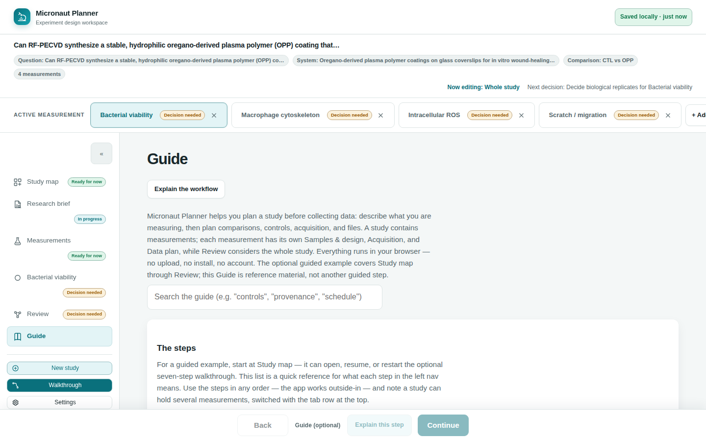

Chapter 1
Getting Started
Open Micronaut Planner for the first time, see a finished plan without touching your own work, and get comfortable with the controls you'll use every session.
What you'll be able to do
- Know what greets you the first time you open the Planner
- Open the shipped example study to see a finished plan, without it becoming your data
- Take the feature Walkthrough to see where everything lives
- Tell the feature Walkthrough apart from the guided example walkthrough and the in-app Guide
- Switch color theme and collapse the step navigation rail
- Know when to reach for the in-app Guide instead of this manual, and back
What you see on first launch
There is no welcome screen, no sign-up, and no choice to make before you can type. Open the Planner and you land straight on Study map with a completely blank study — your own workspace, empty, waiting for a research question. This is deliberate: Micronaut Planner used to seed a first visit with a finished four-measurement example, and then had to explain, banner by banner, that the example wasn't really theirs. It's simpler to start empty and let you ask for the example only if you want to see one.
🔍 Why it works this way. A first workspace that already belongs to someone else's study needs a whole "is this mine?" apparatus — read-only exploration, a "make a copy" step, ownership banners. Starting blank means every study you ever see in your own workspace is actually yours, from the first keystroke.
Opening the example study
Study map carries a quiet link near the bottom: "Want to see a finished plan? Open the example study." Before the worked oregano-plasma-coating plan appears, Micronaut saves a protected copy of your current study in Restore. Demo activity cannot age that copy out of Restore. If the browser cannot preserve the copy, the example does not open and your study stays on screen.
- From Study map, click "Open the example study" under the map.
- The same link is also offered from Settings, if you want it again later.
- Once it's open, the example is ordinary, editable work — nothing marks it read-only, and nothing stops you from typing into it.

⚠️ Careful. Opening the example replaces whatever is currently in your workspace — it doesn't add alongside it. Nothing is destroyed forever: your previous work stays reachable from the header's Utilities → Restore previous version menu, but it does leave the screen the moment you click the link. If you're partway through a real plan, that's worth knowing before you click.
🧪 Try it. Open the example study now, then open Measurements from the step navigation. You'll see four measurements already sitting in the registry, each with its own status badge. Nothing you do here can affect a study you start fresh later — Study map's "New study" action (in the header's Utilities menu, or the nav rail) gives you a blank workspace again whenever you want one, and your example edits stay recoverable in Restore.
The feature Walkthrough
Click the Walkthrough button, in the control panel below the step navigation, for a short, spotlighted tour of the app's own layout — not your study's content. It highlights a handful of on-screen regions in turn — the step navigation, the Study map, how to find and open a measurement, the measurement's own page, and the Review step's export menu — with a short caption for each, and dims everything else so you can't lose your place.
- Click Walkthrough in the nav rail's control panel (below the step buttons) at any time.
- Use Next and Back to move between stops, or the arrow keys.
- Press Esc, or click Close, to leave it early.
💡 Tip. This tour used to start itself on a first visit — and again on any return after being away — which meant a returning researcher opening a new tab was met with an uninvited tour. It now only ever opens when you click the button, precisely so it stops feeling like an interruption.
Two different "walkthroughs" — and the in-app Guide makes three
Micronaut Planner uses the word "walkthrough" for two genuinely different things, and it's worth telling them apart before you go looking for either:
| Name | What it shows | Where you start it |
|---|---|---|
| Feature Walkthrough | A short, one-time spotlight tour of the app's own layout — where things are, not what your study says. | The Walkthrough button in the nav rail's control panel (see above). |
| Guided example walkthrough | A persistent side panel that steps through your actual study, one workspace at a time — Study map, Research brief, Measurements, Measurement, then Review — explaining what each one is for and letting you try it on the study currently open. | The card on Study map itself, offering Start example walkthrough, Resume walkthrough, or Restart walkthrough depending on where you left off; once you're past it, the same card offers Explain Study map instead. |
Either kind of walkthrough is optional, and you're never required to run one before you can use the app for real. And distinct from both: every step's footer carries an Explain this step button, which opens that same side panel with a plain-language explanation of just the step you're currently on, without touching your walkthrough progress or your data.
🔍 Why it works this way. "See where things are" and "walk me through my own study" are different requests, made at different moments — one when you've never opened the app, the other when you're partway through planning and want a refresher. Two separate, purpose-built tools serve each better than one tour trying to do both.
The in-app Guide vs. this manual
The Planner's own Guide step (reachable from the step navigation, and outside the linear workflow — it doesn't count toward any progress badge) is a searchable, plain-text reference: a short definition list of every step and every key term (measurement, groups, readout, controls, provenance), plus what the app produces and a reminder that it's still an alpha. It's built to answer "what does this word mean?" in a few seconds, without leaving the app.
This manual is the longer read: it walks through each screen in more depth, with worked examples and the reasoning behind design choices you'll notice while you use the app. Reach for the Guide when you need a quick, in-context reminder; come back here when you want the fuller explanation of why the app behaves the way it does.
💡 Tip. The Guide has its own search box, filtering by whatever text is already rendered on the page — so searching "controls" or "provenance" there jumps straight to the relevant definition. This manual's own sidebar search works the same way across every chapter.
Theme and the step navigation rail
Two small controls make the workspace more comfortable to live in, and neither one changes your data.
- Click the « button at the top of the step navigation rail to collapse it to a narrow icon-only strip, freeing up room for the workspace — click the same button (now showing ») to expand it back.
- Click the light-bulb Theme button at the bottom of the nav rail to flip straight between light and dark. For a third option — following your system's own light/dark setting automatically — open the header's Utilities menu and choose System under "Color mode" instead.
- Either choice is remembered in this browser for next time you open the Planner.
💡 Tip. The quick nav-rail button and the Utilities menu's three-way choice (Dark / Light / System) both write the same preference — use whichever is closer at hand. Choosing System removes any explicit override, so the app's appearance then tracks your operating system's own setting as it changes.
Check yourself
You open Micronaut Planner for the very first time. What's on screen?
A blank Study map — no seeded example, no welcome dialog to dismiss. The example study is one click away from a link on that same page, but you have to ask for it.
You click "Open the example study" while you already have a real plan open. What happens to your real plan?
Micronaut first saves it as a protected version under Utilities → Restore previous version. Demo saves cannot evict it. If that preservation fails, the example does not open.
You want a fast reminder of what "provenance" means without leaving the app. Do you open this manual or the in-app Guide?
The in-app Guide — it's built for exactly that: a searchable, short definition, reachable without navigating away from your study. Come back to this manual when you want the longer explanation.